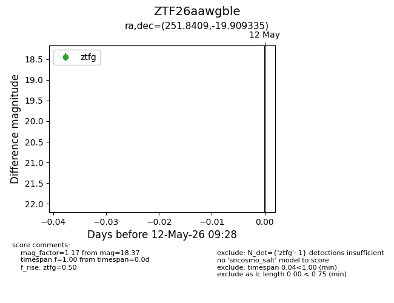
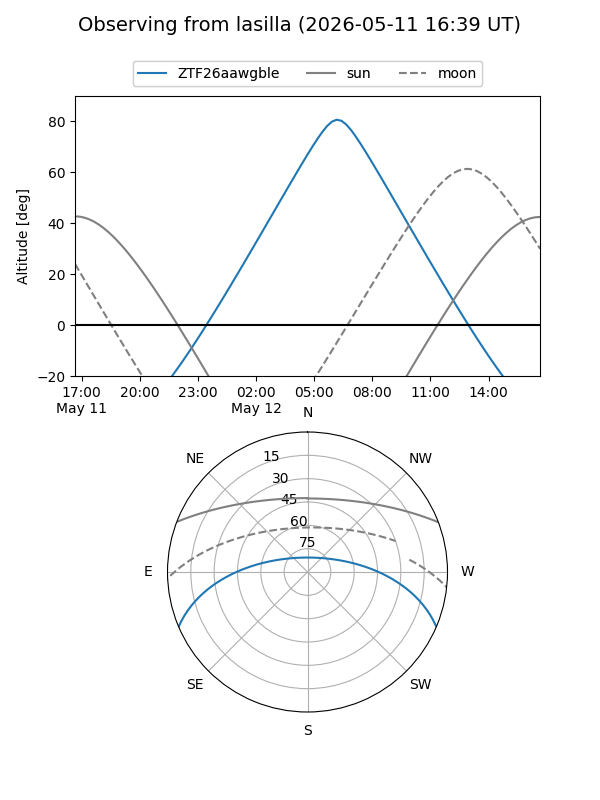
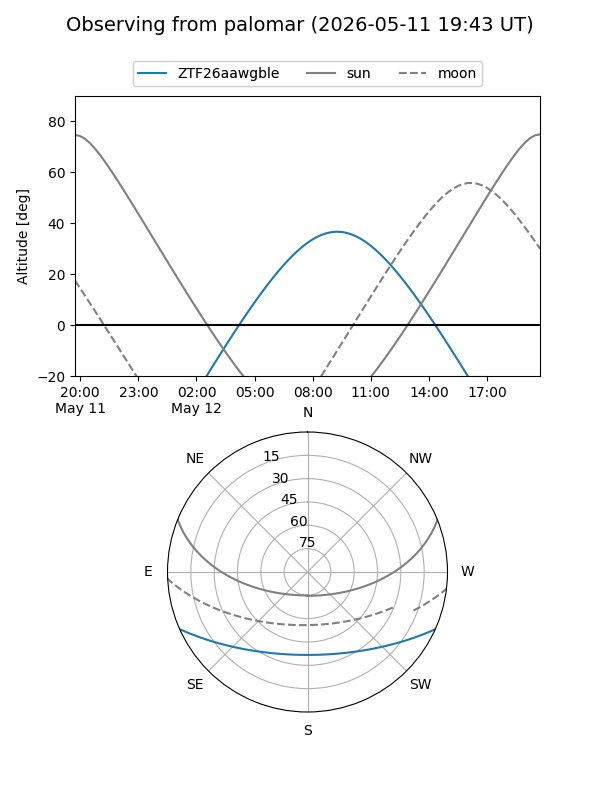

ZTF26aawgble
Target ZTF26aawgble at 2026-05-12 09:30
Aliases and brokers:
FINK: link
Lasair: link
ALeRCE: link
alt names
ZTF26aawgble (ztf,fink_ztf)
Coordinates:
equatorial (ra, dec) = 251.8409,-19.90934
equatorial (HMS+DMS) = 16:47:21.80,-19:54:33.61
galactic (l, b) = (359.8958,+16.01789)
Flags:
Photometry:
last ztfg=18.37
1 ztfg detections
Lightcurve

Visibility


Additional plots